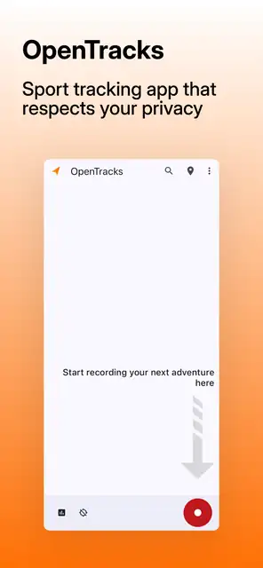
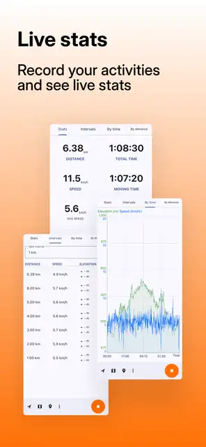

OpenTracks (Reproducible build)
صحة ورياضة
رفيق تتبع الرياضة الذي يحترم خصوصيتك. الرياضة والأنشطة الخارجية تمنح السعادة والمهارة والثقة بالنفس. قدّر صحتك من خلال تتبع تمارينك الرياضية. يسجل أثناء الجري أو المشي، ويمنحك كمبيوتر للدراجات بشاشة أكبر لركوب الدراجات. حدد المواقع المثيرة للاهتمام على طول طريقك بالصور. احتفظ بالإحصائيات المسجلة بتف
✓ ترخيص مفتوح (Apache-2.0) · آخر تحديث: 2026-10-02
v4.29.0الإصدار
10.3 MBالحجم
Apache-2.0الرخصة
Open in Kanzتحميل APK (10.3 MB)
Download APK
SHA-256: dfaa346259f19839a97bdf8a1f434c5cfa49a8477231c634fc195abfad4c64dd


تطبيقات تانية لنفس المطوّر (2)
More apps from this developer: de.dennisguse
امسح الكود لفتح صفحة التطبيق
Scan to open this app page
لو كنز مش متثبت عندك: نزّل متجر كنز.
Not installed? Get the Kanz store.